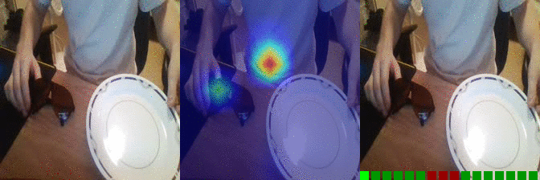
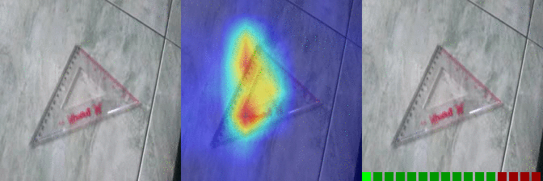
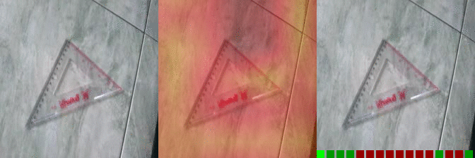
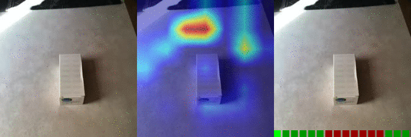
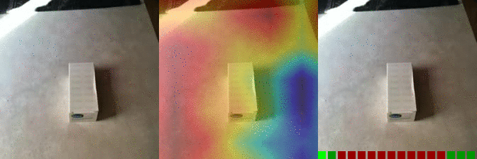

Interpreting Video Features of Deep Net Classifiers
A number of techniques for interpretability have been presented for deep learning in computer vision, typically with the goal of understanding what the networks have actually learned underneath a given classification decision. However, interpretability for deep video architectures is still in its infancy and we do not yet have a clear concept of how to decode spatiotemporal features. In this paper, we present a study comparing how 3D convolutional networks and convolutional LSTM networks learn features across temporally dependent frames. This is the first comparison of two video models that both convolve to learn spatial features but that have principally different methods of modeling time. Additionally, we extend the concept of meaningful perturbation introduced by Fong et al. to the temporal dimension to search for the most meaningful part of a sequence for a classification decision.
Results samples from main article
| Class | Scores I3D | I3D | CLSTM | Mask Losses CLSTM |
|---|---|---|---|---|
| Moving something and something away from each other | OS: 0.994 FS: 0.083 RS: 0.856 |
0.312 0.186 0.125 |
||
| Moving something and something closer to each other | OS: 0.547 FS: 0.028 RS: 0.053 P: 38 |
 |  |
0.257 0.079 0.122 P: 135 |
| Moving something and something so they pass each other | OS: 0.999 FS: 0.002 RS: 0.414 |
0.788 0.392 0.537 |
||
| Moving something up | OS: 0.804 FS: 0.016 RS: 0.667 |
0.546 0.121 0.764 |
||
| Moving something up | OS: 0.685 FS: 0.003 RS: 0.048 CS: 0.001 P: 146 |
 |  | 0.221 0.182 0.350 CS: 0.005 P: 100 |
Further Examples of Spatio-temporal Features:
| Mask Losses I3D | I3D | CLSTM | Mask Losses CLSTM |
|---|---|---|---|
| 0.000 0.000 0.000 |
0.000 0.000 0.000 |
||
| 0.000 0.000 0.000 |
 |  | 0.000 0.000 0.000 |